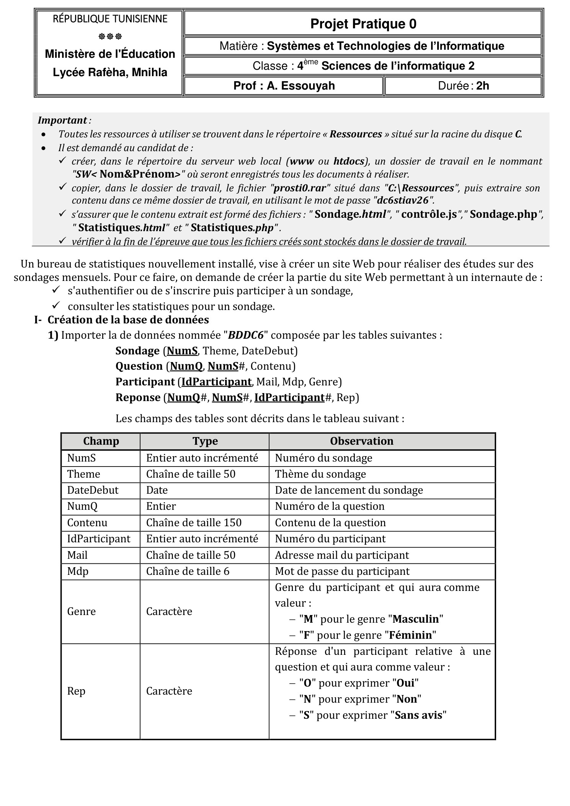
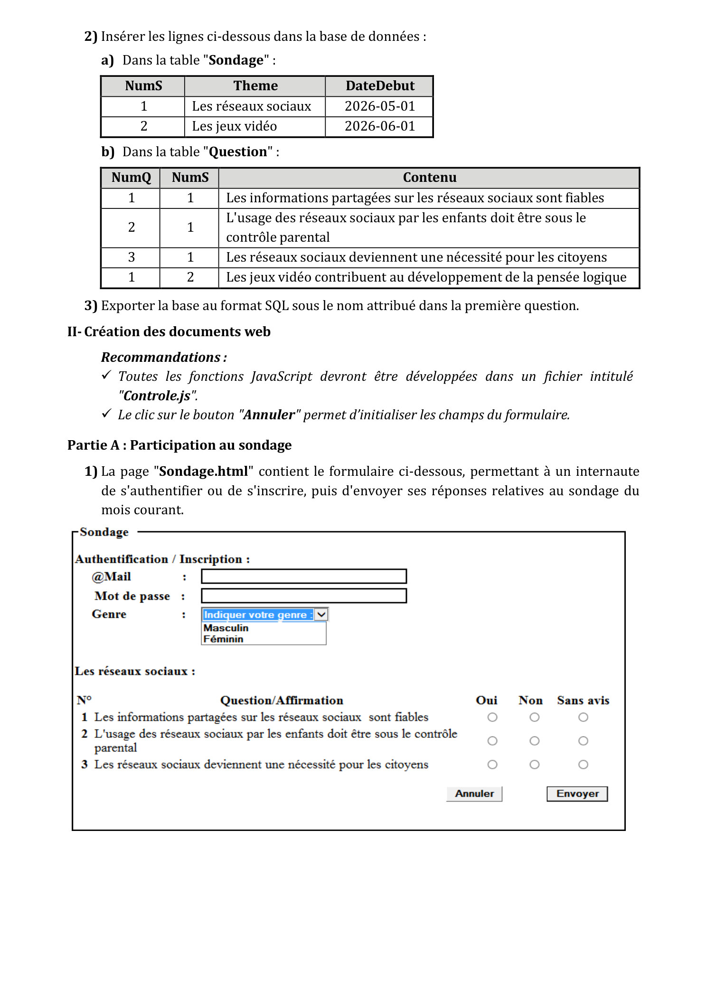
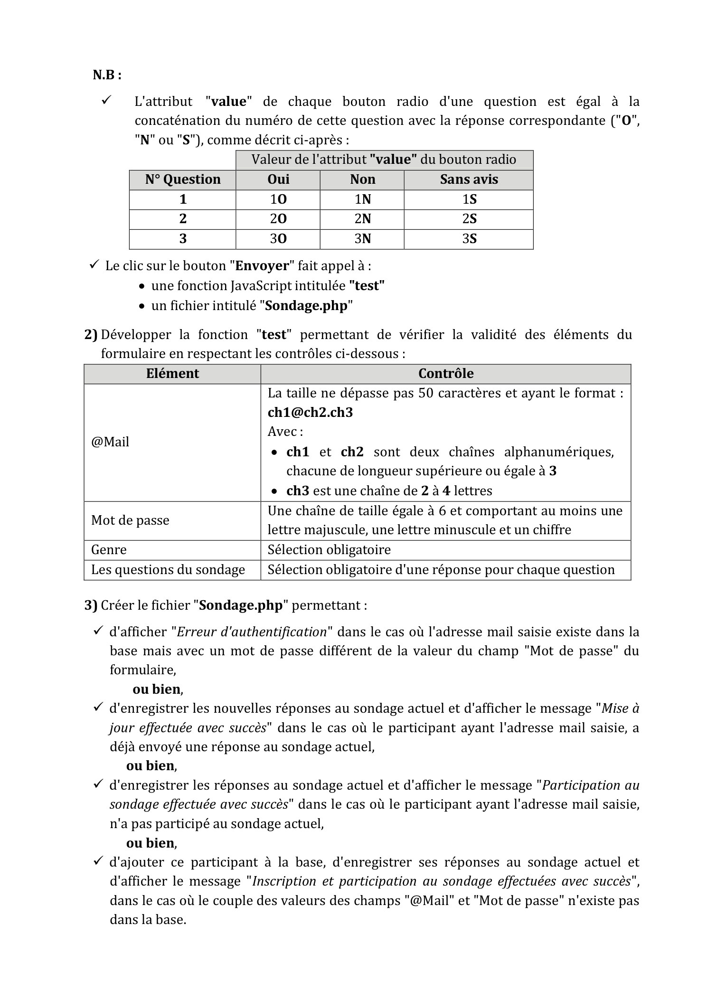
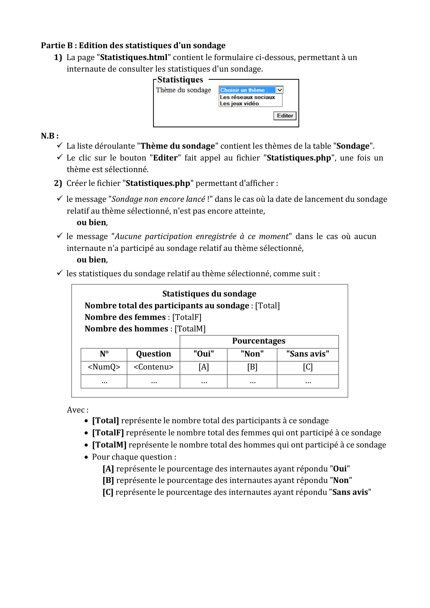

📄 Projet STI 0 — Bureau de statistiques (Sondages mensuels)
4 pages · Énoncé officiel (4ème SI 2 · Durée 2h · Prof : A. Essouyah)
← Atelier Bac Pratique
📦 Télécharger ressources (.zip)
⤓ PDF d'origine




← Retour à l'Atelier Bac Pratique
📦 Télécharger les ressources (index.html, Sondage.html, Statistiques.html)